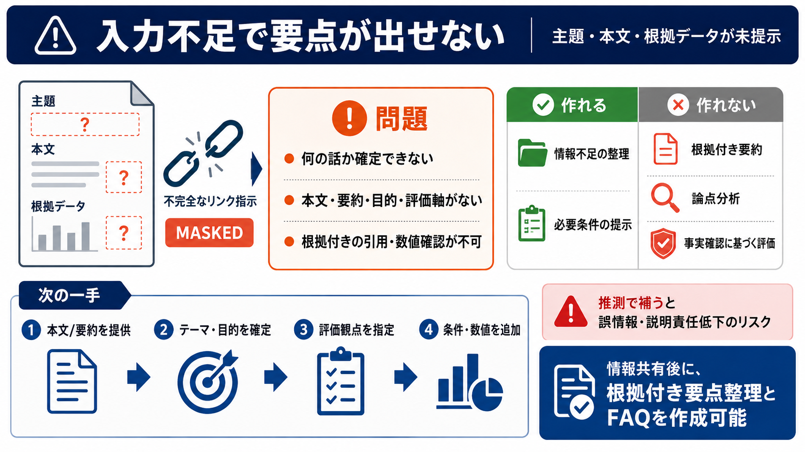

過去から現代における喫煙と分煙の歴史
Jul 5, 2022 — 改正健康増進法によってオフィスや施設内も禁煙化される. 2003年の健康増進法の施行によって、多くの人が利用する店舗や施設において受動喫煙対策が施され

要点が出せない
今回の入力は「ローカルスモークリンク」への不完全なリンク指示のみで、主題や本文（根拠データ）が提示されていません。
レポート前提なし
レポート化には、対象テーマ（何について）と論点（何を評価するか）が必要です。しかし現状ではトピックが確定できません。
根拠がない
リンク先が「[MASKED]」でマスクされているため、要約・引用・数値確認ができません。推測で補うと誤情報リスクが上がります。
不足要素
要求仕様
指定要件（日本語で詳細・500語以上/約1200字以上・根拠のない主張を避ける）を満たす材料がありません。
作れる / 作れない
次の一手
まず「リンク先のテキスト（全文または要点）」か「レポート化したいテーマと論点」をユーザー側から提示してください。
必要な情報
リスク
根拠がない状態で文章を生成すると、再現性（誰が読んでも同じ結論になること）を失い、説明責任も果たせません。
結論
現状ではレポート作成は成立しません。リンク先の内容（テキスト/要点）またはテーマ・論点を共有すれば、根拠付きで要点整理とFAQまで作成できます。
Jul 5, 2022 — 改正健康増進法によってオフィスや施設内も禁煙化される. 2003年の健康増進法の施行によって、多くの人が利用する店舗や施設において受動喫煙対策が施され
その結果、法律・条例の施行直前と比べた施行直後の全国の禁煙飲食店の割合は、改正健康増進法施行により5.7%ポイント上昇したと推計されました。また、同時期に条例を施行した東京都と千葉市においては13.5%ポイント（このうち条例の効果は+7.8…
2021年10月18日 : 「けむいモン」 x 全国ご当地キャラクター コラボポスターを公開しました。 2021年03月23日 : 全国の受動喫煙対策事例を更新しました。 2021年01月19日 : 受動喫煙対策推進啓発ツー…
Sep 15, 2008 — この文書は、Americans for nonsmoker's rightsが2008年4月に発表した屋内完全禁煙モデル条例(和訳版)です。
「原則禁煙」のはずの飲食店。ところが繁華街を歩くと「喫煙OK」の店があちこちに。 背景にあるのが「喫煙目的施設」という例外制度。